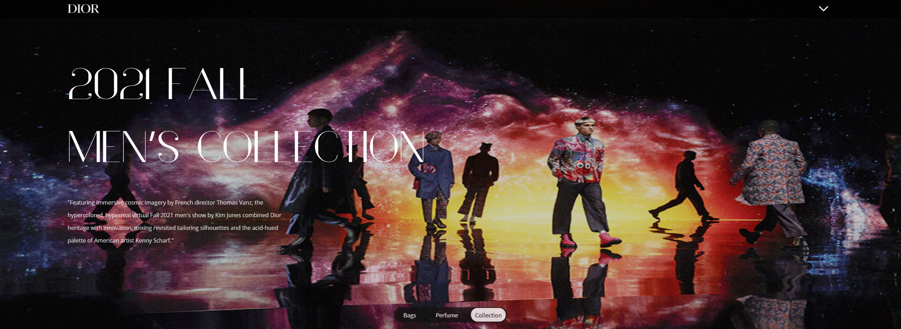

Dior
웹사이트 리뉴얼 프로젝트
Go to page
01.
Ajax
를 이용한
제품 슬라이드,
제품상세 팝업창
Requst
각 카테고리별 제품 수에 맞는 슬라이드 카드를 생성해야한다.
json파일의 제품데이터를 forEach문으로 필요한 갯수만큼 카드를 만든다.
슬라이드를 드래그해서 둘러볼 수 있게 해야한다.
제이쿼리 UI를 가져와 draggable 메소드를 사용했습니다. X(가로)방향으로 움직일 수 있게 제어했습니다. 슬라이드 카드뿐만 아니라 사이의 빈공간도 드래그를 하면 움직일 수 있게 했습니다.
제품 카드를 클릭시 제품 상세화면이 팝업으로 나와야한다.
제품의 상세정보를 담은 json파일을 만들고 제품별 index넘버를 맞춰서 데이터를 입력했습니다. 카드 클릭시 해당 제품의 인덱스 넘버를 받아 json파일에서 데이터를 찾고 팝업 화면에 뿌려줄 수 있게했습니다.
Key point
문제점
click 이벤트와 draggable의 이벤트가 동시에 발생해 드래그를 하기위해 클릭을 하면 팝업창도 같이 나온다.
해결
draggable의 start,drag,stop 중에서 stop상황에서 click이벤트가 중복되는것을 확인했습니다. state라는 변수를 생성하고 drag stop 시에 'drag'를 state에 담게했습니다. click이벤트의 함수에는 state가 'drag'를 담고 있을시에 return 키워드를 이용해 함수가 실행되는 것을 중지시켰습니다. 드래그 후 제품 클릭이 될 수 있게 setTimeout으로 잠깐의 딜레이를 주어 tate를 빈 상태로 만들어 제품 팝업을 띄울 수 있게 했습니다.
02.
Indicater
Requst
버튼 클릭시 해당 섹션으로 슬라이드가 이동되어야한다.
Java script로 각 section의 index번호를 잡고 각 버튼에 맞는 슬라이드 위치를 제어했습니다
인디케이터가 좌우로 움직이며 해당 페이지에 맞는 이름으로 변경된다.
슬라이드와 같이 인디케이터의 위치를 지정하고 각 버튼의 index 번호를 받아 이동해 위치할 수 있게했습니다.
페이지 슬라이드는 마우스 휠 스크롤로도 이동이 가능하기때문에 휠 스크롤 시에도 인디케이터가 알맞은 버튼의 위치로 이동하게 해야한다.
휠 스크롤 이벤트에 발생되는 index번호로 슬라이드 제어와 같이 인디케이터도 이동할 수 있도록 했습니다.
03.
Java script
를 통한
HTML 모듈화

Key point
문제점
header와 footer는 모든 페이지에서 중복된다. 각 html파일에 넣게 되면 코드의 부피가 커진다. 또한, 변경사항이 생길경우 일일이 수정을 해야하기 때문에 관리가 힘들어진다.
해결
header와 footer를 담은 html파일을 따로 만들었습니다. 모든 페이지에 적용되는 common.js에서 load이벤트를 사용하여 header와 footer를 불러내어 적용시켰습니다.
04.
@keyframes
이용한
애니메이션
Request
기능제어
마우스 휠 스크롤 아이콘을 @keyframe에서 0%, 50%, 100% 때의 위치를 transfrom으로 지정했습니다 animation으로 2초와 ease-in-out, infinite로 자연스럽게 반복 할 수 있게 만들었습니다.
05.
API
를 이용한
슬라이드 제작
Request
1.
api의 css와 js 파일을 이용해 화살표 대신 next,previous 버튼으로 대체, js로 4개의 카드씩 보이고 슬라이드 시키게 만들었습니다. 스크립트로 인디케이터, 오토플레이, fadeIn,fadeOut 방식, 세로 슬라이드로 변경도 가능합니다.
2.
카드의 인덱스 넘버와 이미지 파일의 이름을 맞추어 클릭시 해당 이미지가 확대되는 팝업이 나올 수 있게했습니다.
06.
iframe
를 이용한
SNS
Reqeust
1.
외부의 데이터(instagram, youtube 등)을 가져와 필요한 용도로 사용할 수 있습니다.
07.
hover
를 이용한
자연스러운 애니메이션과
Java script
통한
비디오 제어.
Reqeust
1.
외부의 데이터(instagram, youtube 등)을 가져와 필요한 용도로 사용할 수 있습니다.